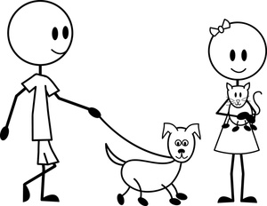

About Me
I work with veterans and their families, mostly retired. Many of them are disabled physically or are suffering from PTSD. At first, it was difficult for me to emphathize with my clients. They were abrupt, tempermental and, quite often, judgemental. Hearing their stories can be depressing at times, also. So many of them, all equally angry, unhappy and border-line poverty, I dared to speak out, but always wanted to ask, "why did you (choose this path)?"
One weekend morning, I had a privilige to speak with an elderly veteran, who has experienced it all - deployments, wars, losses and victories - thoughout his career as an active-duty and a reservist. "Had I known it better," he said. He also said, "no, no regrets. But, have we all known better. Consider it was the result of the fear of uncertainty."
They were young, uncertain and, maybe, needed a sence of uniformity. Yes, they all had a piece of patriotism in them. No doubt. However, it was that uncertainty that gave them a counrage to leave their motherland and fight for that intangible 'ism'. I still cringe speaking to veterans who start and end with self-pity grumpiness. However, I now know that they, too, just like the other elderly veteran, made most out of their uncertainties, and envisioned something different, something better.